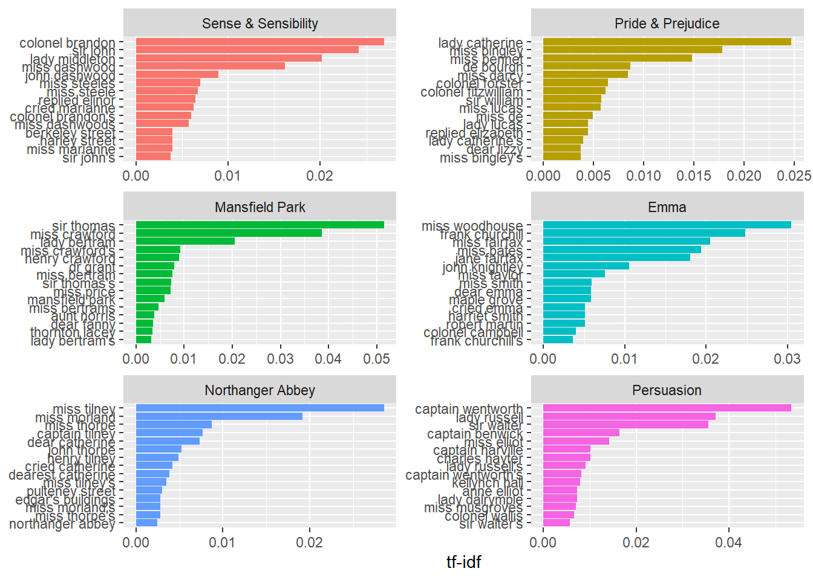
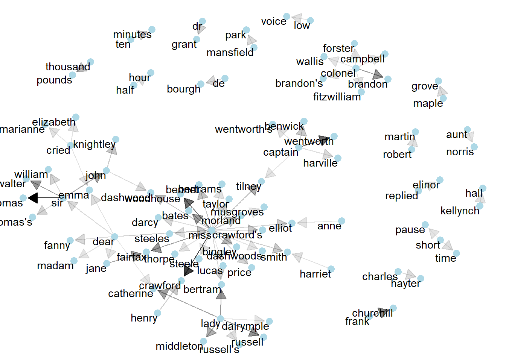

Chapter 9 Words’ relationships analysis
Some intereseting text analysis techniques consists of quantifying the relationships betwwen words. These analysis help at examining for example which words tend to follow others or to occur within the same documents.
9.1 Extracting bi-grams
In order to analyze pairs of words, we can extract the different bi-grams from a corpus of text.
library(dplyr)
library(tidytext)
library(janeaustenr)
# extracting bi-grams
austen_bigrams = austen_books() %>%
unnest_tokens(bigram, text, token = "ngrams", n = 2)
austen_bigrams## # A tibble: 725,049 x 2
## book bigram
## <fct> <chr>
## 1 Sense & Sensibility sense and
## 2 Sense & Sensibility and sensibility
## 3 Sense & Sensibility sensibility by
## 4 Sense & Sensibility by jane
## 5 Sense & Sensibility jane austen
## 6 Sense & Sensibility austen 1811
## 7 Sense & Sensibility 1811 chapter
## 8 Sense & Sensibility chapter 1
## 9 Sense & Sensibility 1 the
## 10 Sense & Sensibility the family
## # ... with 725,039 more rows## # A tibble: 211,236 x 2
## bigram n
## <chr> <int>
## 1 of the 3017
## 2 to be 2787
## 3 in the 2368
## 4 it was 1781
## 5 i am 1545
## 6 she had 1472
## 7 of her 1445
## 8 to the 1387
## 9 she was 1377
## 10 had been 1299
## # ... with 211,226 more rowsSince the resulting dataframe contains some stop words, we can attempt to remove them by seperating the bigrams, filtering the stop words and recombinng them after:
# seperating bigrams by splitting the "bugram" column
library(tidyr)
bigrams_separated <- austen_bigrams %>%
separate(bigram, c("word1", "word2"), sep = " ")
# removing stop words
bigrams_filtered <- bigrams_separated %>%
filter(!word1 %in% stop_words$word) %>%
filter(!word2 %in% stop_words$word)
# new bigrams count
bigram_counts = bigrams_filtered %>%
count(word1, word2, sort = TRUE)
bigram_counts## # A tibble: 33,421 x 3
## word1 word2 n
## <chr> <chr> <int>
## 1 sir thomas 287
## 2 miss crawford 215
## 3 captain wentworth 170
## 4 miss woodhouse 162
## 5 frank churchill 132
## 6 lady russell 118
## 7 lady bertram 114
## 8 sir walter 113
## 9 miss fairfax 109
## 10 colonel brandon 108
## # ... with 33,411 more rows# recombing bigrams
bigrams_united <- bigrams_filtered %>%
unite(bigram, word1, word2, sep = " ")
bigrams_united## # A tibble: 44,784 x 2
## book bigram
## <fct> <chr>
## 1 Sense & Sensibility jane austen
## 2 Sense & Sensibility austen 1811
## 3 Sense & Sensibility 1811 chapter
## 4 Sense & Sensibility chapter 1
## 5 Sense & Sensibility norland park
## 6 Sense & Sensibility surrounding acquaintance
## 7 Sense & Sensibility late owner
## 8 Sense & Sensibility advanced age
## 9 Sense & Sensibility constant companion
## 10 Sense & Sensibility happened ten
## # ... with 44,774 more rows9.2 Analyzing bi-grams
Once we have the list of bi-grams filtered from stop words, we can perform some statistical anaysis by computing for example the TF-IDF values
# Measuring the tf-idf values of bigrams
bigram_tf_idf = bigrams_united %>%
count(book, bigram) %>%
bind_tf_idf(bigram, book, n) %>%
arrange(desc(tf_idf))
bigram_tf_idf## # A tibble: 36,217 x 6
## book bigram n tf idf tf_idf
## <fct> <chr> <int> <dbl> <dbl> <dbl>
## 1 Persuasion captain wentworth 170 0.0299 1.79 0.0535
## 2 Mansfield Park sir thomas 287 0.0287 1.79 0.0515
## 3 Mansfield Park miss crawford 215 0.0215 1.79 0.0386
## 4 Persuasion lady russell 118 0.0207 1.79 0.0371
## 5 Persuasion sir walter 113 0.0198 1.79 0.0356
## 6 Emma miss woodhouse 162 0.0170 1.79 0.0305
## 7 Northanger Abbey miss tilney 82 0.0159 1.79 0.0286
## 8 Sense & Sensibility colonel brandon 108 0.0150 1.79 0.0269
## 9 Emma frank churchill 132 0.0139 1.79 0.0248
## 10 Pride & Prejudice lady catherine 100 0.0138 1.79 0.0247
## # ... with 36,207 more rows# plotting the results
bigram_tf_idf %>%
arrange(desc(tf_idf)) %>%
mutate(bigram = factor(bigram, levels = rev(unique(bigram)))) %>%
group_by(book) %>%
top_n(15) %>%
ungroup() %>%
ggplot(aes(bigram, tf_idf, fill = book)) +
geom_col(show.legend = FALSE) +
labs(x = NULL, y = "tf-idf") +
facet_wrap(~book, ncol = 2, scales = "free") +
coord_flip()
9.3 Visualizing a network of bigrams
The relationships between words can be visualized as a graph where nodes represent the words and edges represent the bigram connections. In order to make graph visualizing, we will start by transforming our dataframe bigram_counts into a graph.
## # A tibble: 33,421 x 3
## word1 word2 n
## <chr> <chr> <int>
## 1 sir thomas 287
## 2 miss crawford 215
## 3 captain wentworth 170
## 4 miss woodhouse 162
## 5 frank churchill 132
## 6 lady russell 118
## 7 lady bertram 114
## 8 sir walter 113
## 9 miss fairfax 109
## 10 colonel brandon 108
## # ... with 33,411 more rows# filter common combinations
bigram_graph = bigram_counts %>%
filter(n > 20) %>%
graph_from_data_frame()
bigram_graph## IGRAPH ab4e2d9 DN-- 91 77 --
## + attr: name (v/c), n (e/n)
## + edges from ab4e2d9 (vertex names):
## [1] sir ->thomas miss ->crawford captain ->wentworth
## [4] miss ->woodhouse frank ->churchill lady ->russell
## [7] lady ->bertram sir ->walter miss ->fairfax
## [10] colonel ->brandon miss ->bates lady ->catherine
## [13] sir ->john jane ->fairfax miss ->tilney
## [16] lady ->middleton miss ->bingley thousand->pounds
## [19] miss ->dashwood miss ->bennet john ->knightley
## [22] miss ->morland captain ->benwick dear ->miss
## + ... omitted several edgesNow we can use the ggraph package in order to make a beautiful visulization of our words graph by specifying the direction of connections.
library(ggraph)
set.seed(2016)
a <- grid::arrow(type = "closed", length = unit(.15, "inches"))
ggraph(bigram_graph, layout = "fr") +
geom_edge_link(aes(edge_alpha = n), show.legend = FALSE,
arrow = a, end_cap = circle(.07, 'inches')) +
geom_node_point(color = "lightblue", size = 3) +
geom_node_text(aes(label = name), vjust = 1, hjust = 1) +
theme_void()